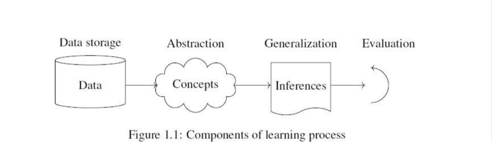
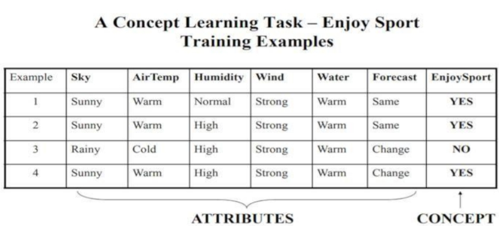
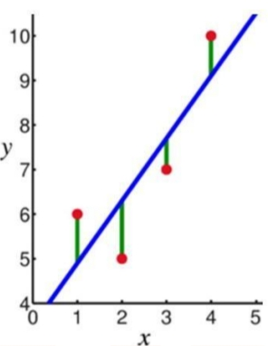
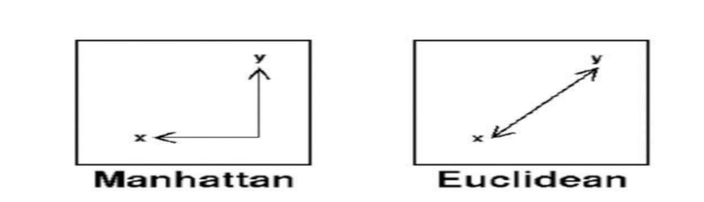
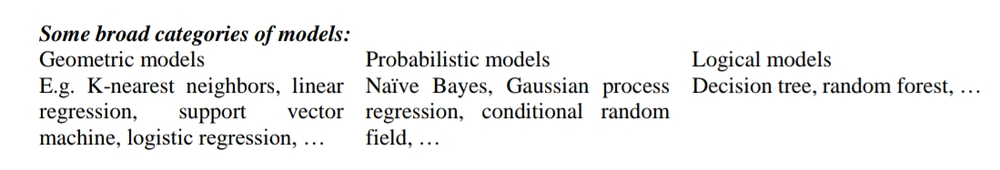
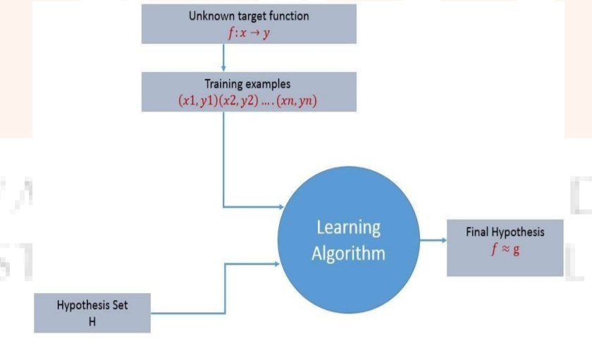

unit - 1
Introduction to Machine Learning :
Introduction, Components of Learning, Learning Models, Geometric Models, Probabilistic Models, Logic Models, Grouping and Grading, Designing a Learning System, Types of Learning, Supervised, Unsupervised, Reinforcement, Perspectives and Issues, Version Spaces, PAC Learning, VC Dimension.
Introduction
What Is Machine Learning?
Machine learning is programming computers to optimize a performance criterion using example data or past experience. We have a model defined up to some parameters, and learning is the execution of a computer program to optimize the parameters of the model using the training data or past experience. The model may be predictive to make predictions in the future, or descriptive to gain knowledge from data, or both.
Arthur Samuel, an early American leader in the field of computer gaming and artificial intelligence, coined the term ―Machine Learning in 1959 while at IBM. He defined machine learning as ―the field of study that gives computers the ability to learn without being explicitly programmed. However, there is no universally accepted definition for machine learning. Different authors define the term differently.
Definition of learning
Definition
A computer program is said to learn from experience E with respect to some class of tasks T and performance measure P, if its performance at tasks T, as measured by P, improves with experience E.
Examples- Handwriting recognition learning problem
- Task T: Recognising and classifying handwritten words within images
- Performance P: Percent of words correctly classified
- Training experience E: A dataset of handwritten words with given classifications
- A robot driving learning problem
- Task T: Driving on highways using vision sensors
- Performance measure P: Average distance traveled before an error
- training experience: A sequence of images and steering commands recorded while observing a human driver
- A chess learning problem
- Task T: Playing chess
- Performance measure P: Percent of games won against opponents
- Training experience E: Playing practice games against itself
A computer program which learns from experience is called a machine learning program or simply a learning program. Such a program is sometimes also referred to as a learner.
Components of Learning
Basic components of learning process The learning process, whether by a human or a machine, can be divided into four components, namely, data storage, abstraction, generalization and evaluation. Figure 1.1 illustrates the variouscomponents and the steps involved in the learning process.
1. Data storage
Facilities for storing and retrieving huge amounts of data are an important component of the
learning process. Humans and computers alike utilize data storage as a foundation for advanced
reasoning.
• In a human being, the data is stored in the brain and data is retrieved using electrochemical signals.
• Computers use hard disk drives, flash memory, random access memory and similar devices to store
data and use cables and other technology to retrieve data.
2. Abstraction
The second component of the learning process is known as abstraction.
Abstraction is the process of extracting knowledge about stored data. This involves creating general
concepts about the data as a whole. The creation of knowledge involves application of known models and
creation of new models.
The process of fitting a model to a dataset is known as training. When the model has been trained, the
data is transformed into an abstract form that summarizes the original information.
3. Generalization
The third component of the learning process is known as generalisation.
The term generalization describes the process of turning the knowledge about stored data into a form that
can be utilized for future action. These actions are to be carried out on tasks that are similar, but not
identical, to those what have been seen before. In generalization, the goal is to discover those properties
of the data that will be most relevant to future tasks.
4. Evaluation
Evaluation is the last component of the learning process.
It is the process of giving feedback to the user to measure the utility of the learned knowledge. This
feedback is then utilised to effect improvements in the whole learning process
Applications of machine learning
Application of machine learning methods to large databases is called data mining. In data mining, a large volume of data is processed to construct a simple model with valuable use, for example, having high predictive accuracy.
The following is a list of some of the typical applications of machine learning.
- In retail business, machine learning is used to study consumer behaviour.
- In finance, banks analyze their past data to build models to use in credit applications, fraud detection, and the stock market.
- In manufacturing, learning models are used for optimization, control, and troubleshooting.
- In medicine, learning programs are used for medical diagnosis.
- In telecommunications, call patterns are analyzed for network optimization and maximizing the quality of service.
- In science, large amounts of data in physics, astronomy, and biology can only be analyzed fast enough by computers. The World Wide Web is huge; it is constantly growing and searching for relevant information cannot be done manually.
- In artificial intelligence, it is used to teach a system to learn and adapt to changes so that the system designer need not foresee and provide solutions for all possible situations.
- It is used to find solutions to many problems in vision, speech recognition, and robotics.
- Machine learning methods are applied in the design of computer-controlled vehicles to steer correctly when driving on a variety of roads.
- Machine learning methods have been used to develop programmes for playing games such as chess, backgammon and Go.
Learning Models
Machine learning is concerned with using the right features to build the right models that achieve the right tasks. The basic idea of Learning models has divided into three categories. For a given problem, the collection of all possible outcomes represents the sample space or instance space.
- Using a Logical expression. (Logical models)
- Using the Geometry of the instance space. (Geometric models)
- Using Probability to classify the instance space. (Probabilistic models)
- Grouping and Grading
Logical models
Logical models use a logical expression to divide the instance space into segments and hence construct grouping models. A logical expression is an expression that returns a Boolean value, i.e., a True or False outcome. Once the data is grouped using a logical expression, the data is divided into homogeneous groupings for the problem we are trying to solve. For example, for a classificationproblem, all the instances in the group belong to one class.
There are mainly two kinds of logical models: Tree models and Rule models.
Rule models consist of a collection of implications or IF-THEN rules. For tree-based models, the 'if-part' defines a segment and the 'then-part' defines the behaviour of the model for this segment. Rule models follow the same reasoning.
Logical models and Concept learning
To understand logical models further, we need to understand the idea of Concept Learning. Concept Learning involves learning logical expressions or concepts from examples. The idea of Concept Learning fits in well with the idea of Machine learning, i.e., inferring a general function from specific training examples. Concept learning forms the basis of both tree-based and rule-based models. More formally, Concept Learning involves acquiring the definition of a general category from a given set of positive and negative training examples of the category. A Formal Definition for Concept Learning is "The inferring of a Boolean-valued function from training examples of its input and output." In concept learning, we only learn a description for the positive class and label everything that doesn‘t satisfy that description as negative.
The following example explains this idea in more detail
A Concept Learning Task called ―Enjoy Sport‖ as shown above is defined by a set of data from some example days. Each data is described by six attributes. The task is to learn to predict the value of Enjoy Sport for an arbitrary day based on the values of its attribute values. The problem can be represented by a series of hypotheses. Each hypothesis is described by a conjunction of constraints on the attributes. The training data represents a set of positive and negative examples of the target function. In the example above, each hypothesis is a vector of six constraints, specifying the values of the six attributes – Sky, AirTemp, Humidity, Wind, Water, and Forecast. The training phase involves learning the set of days (as a conjunction of attributes) for which Enjoy Sport = yes.
Thus, the problem can be formulated as:
-
Given instances X which represent a set of all possible days, each described by the attributes:
- Sky – (values: Sunny, Cloudy, Rainy),
- AirTemp – (values: Warm, Cold),
- Humidity – (values: Normal, High),
- Wind – (values: Strong, Weak),
- Water – (values: Warm, Cold),
- Forecast – (values: Same, Change).
Try to identify a function that can predict the target variable Enjoy Sport as yes/no, i.e., 1 or 0.
Geometric models
In the previous section, we have seen that with logical models, such as decision trees, a logical expression is used to partition the instance space. Two instances are similar when they end up in the same logical segment. In this section, we consider models that define similarity by considering the geometry of the instance space. In Geometric models, features could be described as points in two dimensions (x- and y-axis) or a three-dimensional space (x, y, and z). Even when features are not intrinsically geometric, they could be modelled in a geometric manner (for example, temperature as a function of time can be modelled in two axes). In geometric models, there are two ways we could impose similarity.
- We could use geometric concepts like lines or planes to segment (classify) the instance space. These are called Linear models.
- Alternatively, we can use the geometric notion of distance to represent similarity. In this case, if two points are close together, they have similar values for features and thus can be classed as similar. We call such models as Distance-based models.
Linear models
Linear models are relatively simple. In this case, the function is represented as a linear combination of its inputs. Thus, if x1 and x2 are two scalars or vectors of the same dimensionand a and b are arbitrary scalars, then ax1 + bx2 represents a linear combination of x1 and x2. In the simplest case where f(x) represents a straight line, we have an equation of the form f (x) = mx + c where c represents the intercept and m represents the slope.
Linear models are parametric, which means that they have a fixed form with a small number of numeric parameters that need to be learned from data. For example, in f (x) = mx + c, m and c are the parameters that we are trying to learn from the data. This technique is different from tree or rule models, where the structure of the model (e.g., which features to use in the tree, and where) is not fixed in advance. Linear models are stable, i.e., small variations in the training data have only a limited impact on the learned model. In contrast, tree models tend to vary more with the training data, as the choice of a different split at the root of the tree typically means that the rest of the tree is different as well. As a result of having relatively few parameters, Linear models have low variance and high bias. This implies that Linear models are less likely to overfit the training data than some other models. However, they are more likely to underfit. For example, if we want to learn the boundaries between countries based on labelled data, then linear models are not likely to give a good approximation.
Distance-based models
&nbs Distance-based models are the second class of Geometric models. Like Linear models, distancebased models are based on the geometry of data. As the name implies, distance-based models work on the concept of distance. In the context of Machine learning, the concept of distance is not based on merely the physical distance between two points. Instead, we could think of the distance between two points considering the mode of transport between two points. Travelling between two cities by plane covers less distance physically than by train because a plane is unrestricted. Similarly, in chess, the concept of distance depends on the piece used – for example, a Bishop can move diagonally. Thus, depending on the entity and the mode of travel, the concept of distance can be experienced differently. The distance metrics commonly used are Euclidean, Minkowski, Manhattan, and Mahalanobis.
Distance is applied through the concept of neighbours and exemplars. Neighbours are points in proximity with respect to the distance measure expressed through exemplars. Exemplars are either centroids that find a centre of mass according to a chosen distance metric or medoids that find the most centrally located data point. The most commonly used centroid is the arithmetic mean, which minimises squared Euclidean distance to all other points.
Notes:
- The centroid represents the geometric centre of a plane figure, i.e., the arithmetic mean position of all the points in the figure from the centroid point. This definition extends to any object in ndimensional space: its centroid is the mean position of all the points.
- Medoids are similar in concept to means or centroids. Medoids are most commonly used on data when a mean or centroid cannot be defined. They are used in contexts where the centroid is not representative of the dataset, such as in image data.
Examples of distance-based models include the nearest-neighbour models, which use the training data as exemplars – for example, in classification. The K-means clustering algorithm also uses exemplars to create clusters of similar data points.
Probabilistic models
The third family of machine learning algorithms is the probabilistic models. We have seen before that the k-nearest neighbour algorithm uses the idea of distance (e.g., Euclidian distance) to classify entities, and logical models use a logical expression to partition the instance space. In this section, we see how the probabilistic models use the idea of probability to classify new entities. Probabilistic models see features and target variables as random variables. The process of modelling represents and manipulates the level of uncertainty with respect to these variables. There are two types of probabilistic models: Predictive and Generative. Predictive probability models use the idea of a conditional probability distribution P (Y |X) from which Y can be predicted from X. Generative models estimate the joint distribution P (Y, X). Once we know the joint distribution for the generative models, we can derive any conditional or marginal distribution involving the same variables. Thus, the generative model is capable of creating new data points and their labels, knowing the joint probability distribution. The joint distribution looks for a relationship between two variables. Once this relationship is inferred, it is possible to infer new data points.
Naïve Bayes is an example of a probabilistic classifier. We can do this using the Bayes rule defined as
The Naïve Bayes algorithm is based on the idea of Conditional Probability. Conditional probability is based on finding the probability that something will happen, given that something else has already happened. The task of the algorithm then is to look at the evidence and to determine the likelihood of a specific class and assign a label accordingly to each entity.
Some broad categories of models:
Grouping and Grading
Grading vs grouping is an orthogonal categorization to geometric-probabilistic-logical-compositional.
- Grouping models break the instance space up into groups or segments and in each segment apply a very simple method (such as majority class). o E.g. decision tree, KNN.
- Grading models form one global model over the instance space. o E.g. Linear classifiers – Neural networks
Designing a Learning System
For any learning system, we must be knowing the three elements — T (Task), P (Performance Measure), and E (Training Experience). At a high level, the process of learning system looks as below.
The learning process starts with task T, performance measure P and training experience E and objective are to find an unknown target function. The target function is an exact knowledge to be learned from the training experience and its unknown. For example, in a case of credit approval, the learning system will have customer application records as experience and task would be to classify whether the given customer application is eligible for a loan. So in this case, the training examples can be represented as